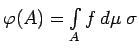
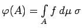
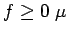
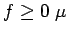

Für eine integrierbare Funktion f ist die auf  definierte Funktion -additiv und absolutstetig bezüglich des Maßes . Fundamental für viele theoretische Untersuchungen und praktische Anwendungen ist die Umkehrung dieses Fakts:
definierte Funktion -additiv und absolutstetig bezüglich des Maßes . Fundamental für viele theoretische Untersuchungen und praktische Anwendungen ist die Umkehrung dieses Fakts:
gilt. Die Funktion f ist dabei bis auf ihre Äquivalenzklasse eindeutig bestimmt, und  ist nichtnegativ genau dann, wenn -f.ü.
ist nichtnegativ genau dann, wenn -f.ü.